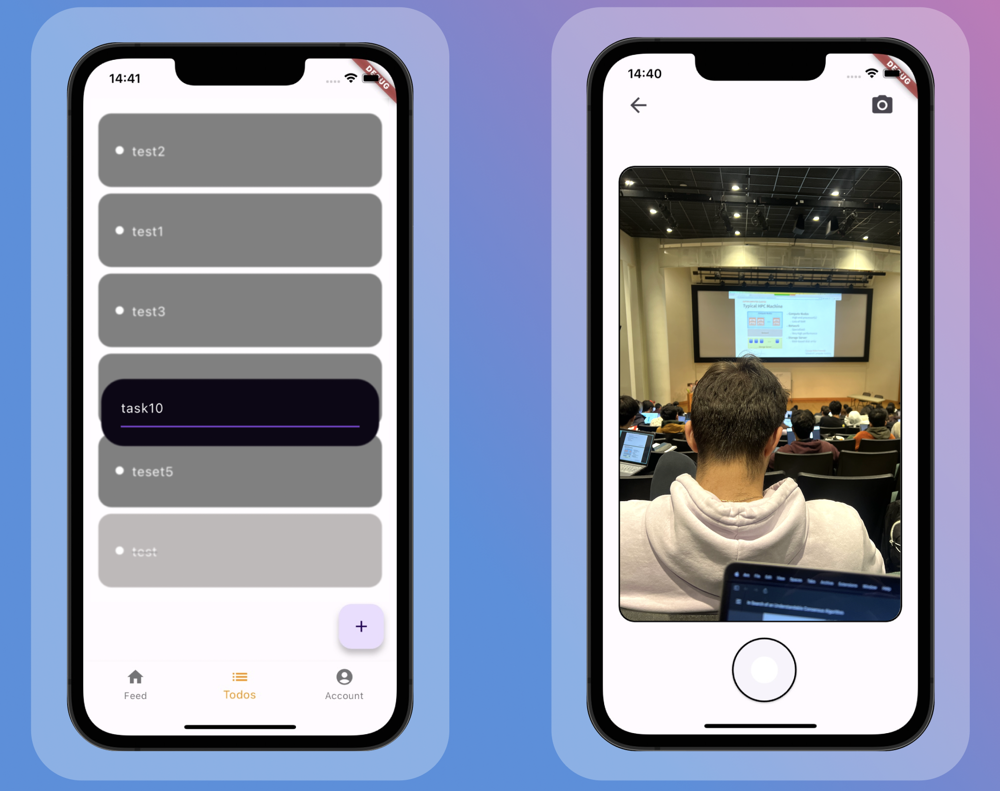

catalist
A Flutter Mobile App

Summary:
Catalist/Sashimi is a productivity-focused social media app designed to help users manage tasks, connect with friends, and maintain a balanced lifestyle. It integrates a to-do list with photo-taking capabilities, enabling users to visualize their tasks and progress in their lives in a more engaging way.
Tech Stack
- Frontend: Flutter, Dart, MaterialUI
- Backend/Database: Firebase Firestore
- Authentication: Firebase Authentication
- Photo Capture: Flutter Camera Package
Key Features:
- Account Page with Profile Settings
- Feed Page and Add Friends
- Secure Login Page with Firebase Authentication
- Integrated To-Do List
- Photo-taking Feature Linked with To-Do List
